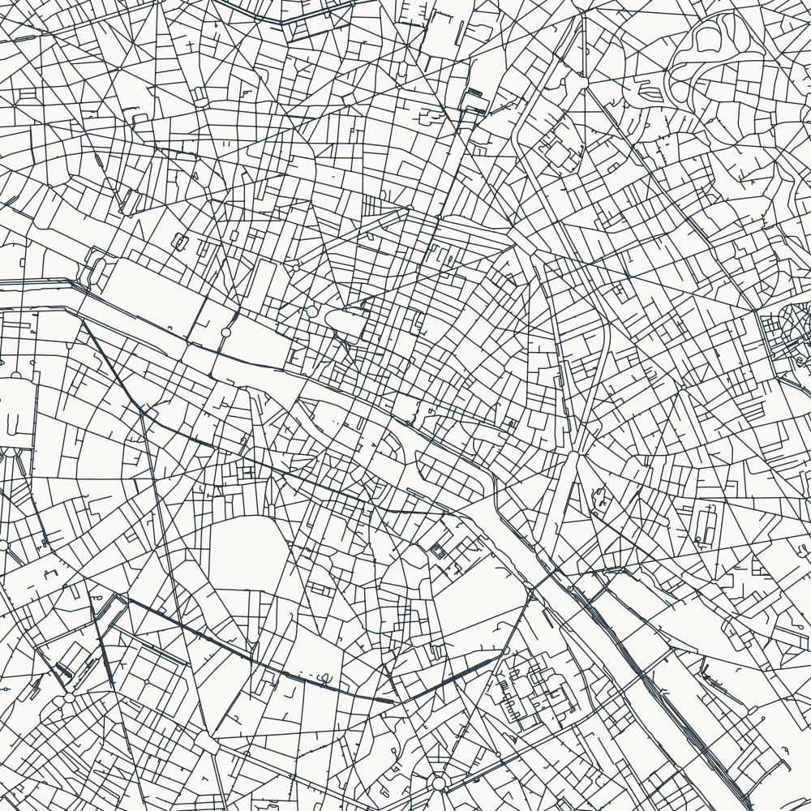
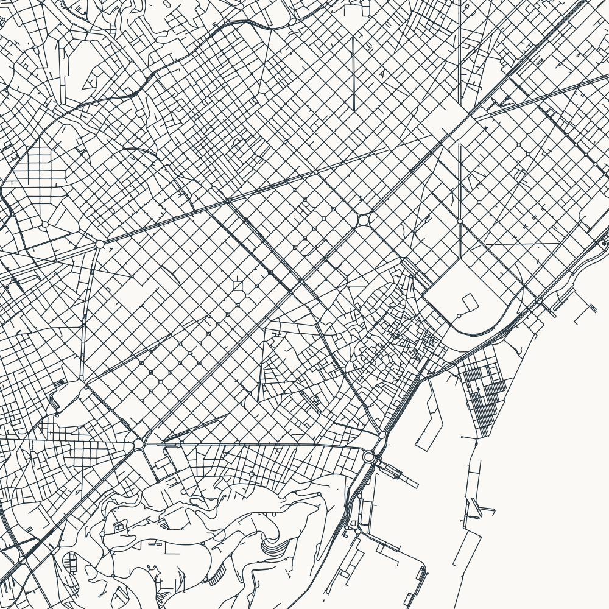

Paris

Central Paris: radial avenues and irregular local streets
Each square covers 6 × 6 km. North up; uniform line width; Network: all_public; drawing: street classes only.
Compare at desktop and phone widths: is the pattern readable, distinctive, and sufficiently centred? There is no water layer. Other blank areas mean absence of included roads.

Central Paris: radial avenues and irregular local streets

Eixample and the old city: contrasting street patterns
© OpenStreetMap contributors · Data retrieved during generation; see manifest.json.